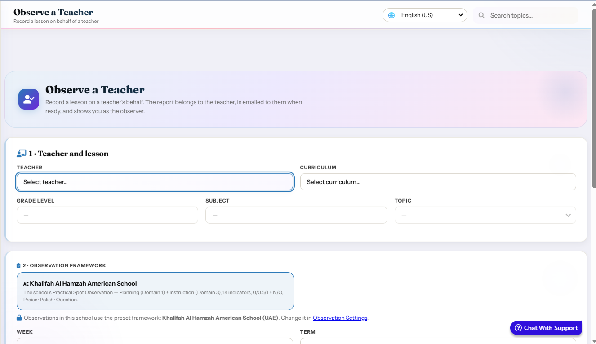
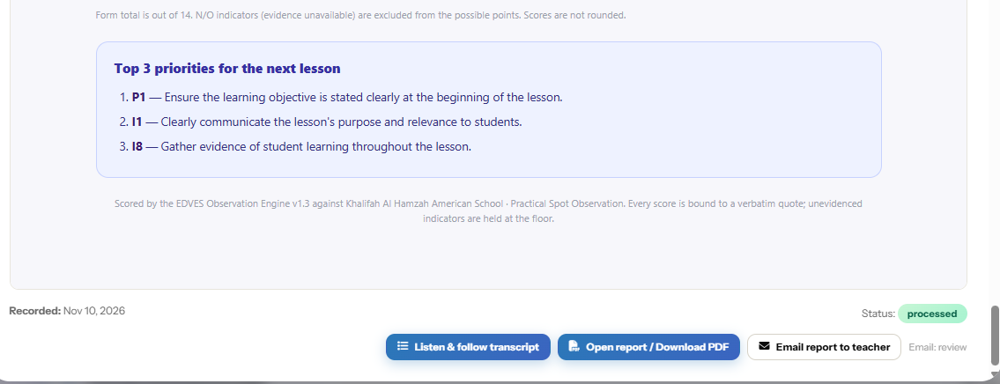
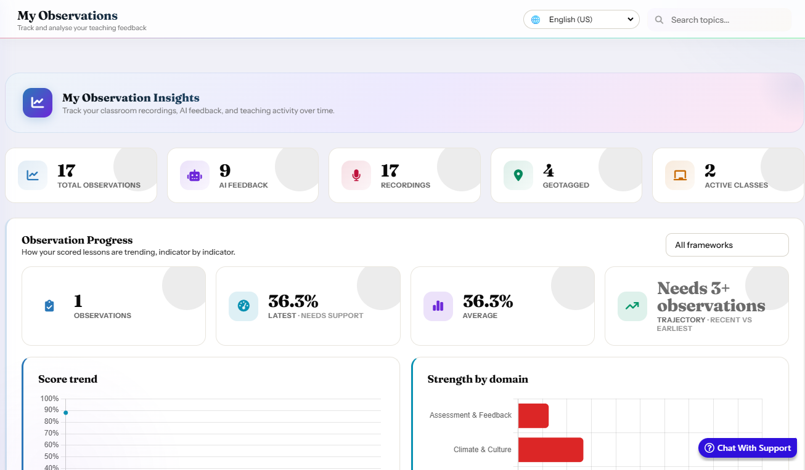

Every classroom observed by the same standard.
Instructional coaches score the lesson on your own rubric and learning standards. Teachers get feedback before the next class, not next week.
A 20-minute walkthrough on your own rubric and learning standards. Nothing to rewrite.
Grade 7 Math, Period 3
Scored against your campus rubric
Observation shouldn't feel like paperwork.
- Feedback arrives days later, when the lesson is already forgotten.
- Two instructional coaches score the same lesson two different ways.
- Rubrics sit in binders and PDFs, and the data goes nowhere.
- Teachers hear a verdict instead of help.
There is a simpler way to run classroom walkthroughs.
Three steps from lesson to feedback.
Bring your rubric
We set it up with your learning standards.
Score the lesson
Instructional coaches rate each indicator and add their own comments.
Send the feedback
Teachers get clear next steps while the lesson is fresh.
Start an observation in four simple steps.
- Select the teacher to observe.
- Select the curriculum.
- Choose the grade level, subject and topic.
- Choose to record audio or video.
Then score the lesson on your own rubric.

Give effortless, immediate feedback
The moment you submit an observation, the teacher receives the results by email.
Automatic, immediate feedback eases teachers' observation anxiety and shortens your to-do list.
Better still, it gives teachers feedback they can act on to grow and deliver stronger lessons.
Book a free demo
Real-time observation reports
Understand your observation data at a glance with built-in analytics and reporting tools, all inside the platform.

Unlock consistency and accountability
Dashboards keep your whole team up to date with real-time stats on every observation across your school.
How many?
Track your progress toward your observation goals.
How long?
See how much time is spent in classrooms.
Who is observing?
See who is observing and who needs to observe more.
Who was observed?
See who has been observed and who is next.
Bring your campus rubric.Your instructional coaches stay in the lead.
Fair feedback, delivered fast.
Principals and assistant principals
The same rubric in every classroom, so feedback does not depend on who walked in.
Instructional coaches
Spend your time in the classroom, not on forms. Score against your campus rubric and learning standards, and add your own comments any time.
Teachers
Feedback that feels like support, with clear steps for the next lesson.
Feedback is only half the job. Then what?
- Real-time adaptation of lesson flow and difficulty
- Auto-mapping to Common Core, NGSS and state standards
- Equity-aware support for subgroup-targeted interventions

The EDVES Pedagogy Hub is a newly refined instructional guide that helps teachers deliver lessons to students at every level of ability and learning need.
Once their feedback arrives, teachers can choose from a growing library of teaching patterns built into the platform.
Questions school leaders ask.
Can we use our own rubric?
Yes. Instructional coaches score lessons against your campus observation rubric, mapped to your learning standards, so nothing has to be rewritten.
When do teachers get their feedback?
Straight away, while the lesson is still fresh, so they can use it in their next class.
What happens after the feedback?
Teachers can choose from a growing library of teaching patterns in the EDVES Pedagogy Hub.
Start observing better
Transform observations into a powerful tool to improve instructional practice.